Image 1 of 1: ‘A screenshot of the function `fahrenheit_to_celsius` defined above with some extra text annotations on specific function elements. Above the text `fahrenheit_to_celsisus`, the text reads 'Function name'. Above the text `temp_F`, the text reads 'Function argument(s)'.' The next two lines, surrounded by curly braces, are labelled 'Function body'.’
Image 1 of 3: ‘Scatterplot of average daily inflammation over 40 days, increasing in a mostly straight line until day 20, and then decreasing in a mostly straight line to visualize inflammation levels in a single dataset.’
Image 2 of 3: ‘A scatterplot of maximum daily inflammation over 40 days, increasing in a straight line until day 20, and then decreasing in a straight line to visualize inflammation levels in a single dataset.’
Image 3 of 3: ‘A scatterplot of minimum daily inflammation over 40 days, increasing in a step-wise pattern until day 20, and then decreasing in a step-wise pattern to visualize inflammation levels in a single dataset.’
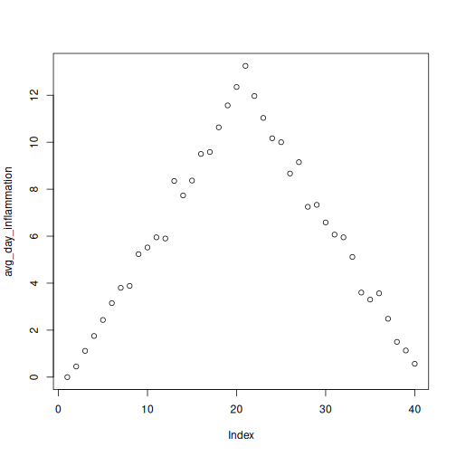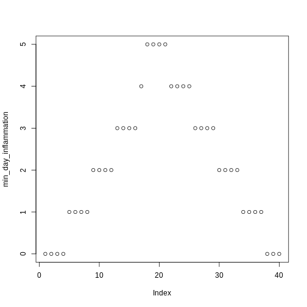
Figure 2
Image 1 of 3: ‘A scatterplot of average daily inflammation over 40 days, increasing in a mostly straight line until day 20, and then decreasing in a mostly straight line to visualize inflammation levels in a single dataset.’
Image 2 of 3: ‘A scatterplot of average daily inflammation over 40 days, increasing in a mostly straight line until day 20, and then decreasing in a mostly straight line to visualize inflammation levels in a single dataset.’
Image 3 of 3: ‘A scatterplot of average daily inflammation over 40 days, increasing in a mostly straight line until day 20, and then decreasing in a mostly straight line to visualize inflammation levels in a single dataset.’
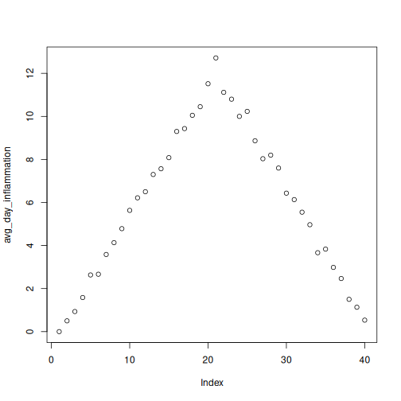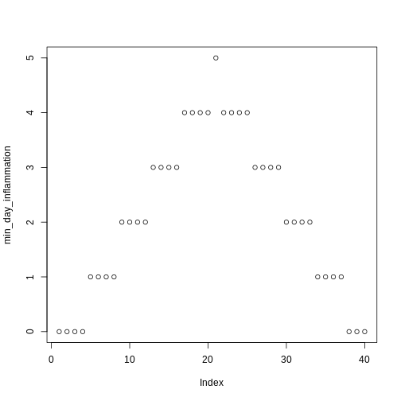
Figure 3
Image 1 of 3: ‘Scatterplot of average daily inflammation showing a ramp with a peak at 20 days.’
Image 2 of 3: ‘Scatterplot of average daily inflammation showing a ramp with a peak at 20 days.’
Image 3 of 3: ‘Scatterplot of average daily inflammation showing a ramp with a peak at 20 days.’
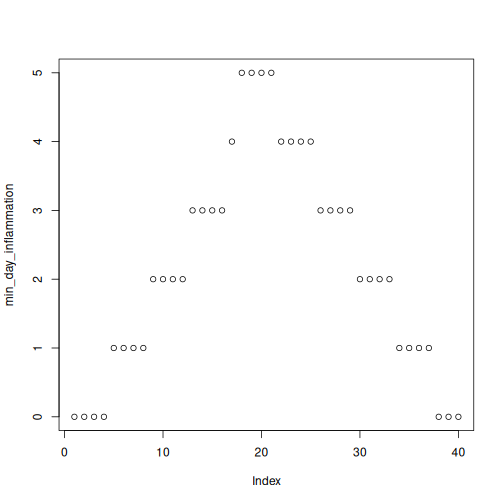
Figure 4
Image 1 of 3: ‘Scatterplot of average daily inflammation showing a ramp with a peak at 20 days.’
Image 2 of 3: ‘Scatterplot of average daily inflammation showing a ramp with a peak at 20 days.’
Image 3 of 3: ‘Scatterplot of average daily inflammation showing a ramp with a peak at 20 days.’
Figure 5
Image 1 of 3: ‘Scatterplot of average daily inflammation showing a ramp with a peak at 20 days.’
Image 2 of 3: ‘Scatterplot of average daily inflammation showing a ramp with a peak at 20 days.’
Image 3 of 3: ‘Scatterplot of average daily inflammation showing a ramp with a peak at 20 days.’
Image 1 of 1: ‘tempConvert directory containing 4 items: Namespace file, Description file, man directory with documentation in .Rd files, R directory with functions in .R files’


 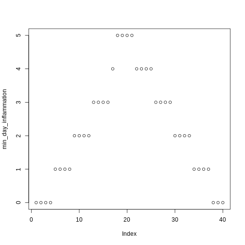
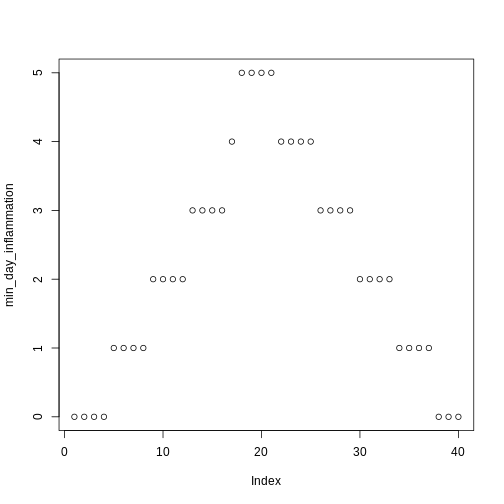 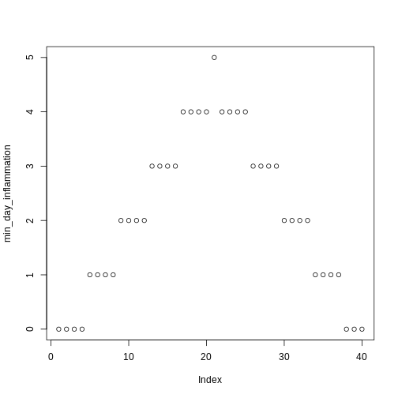
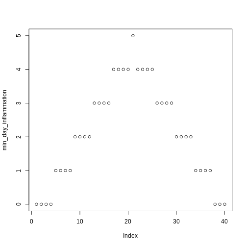
 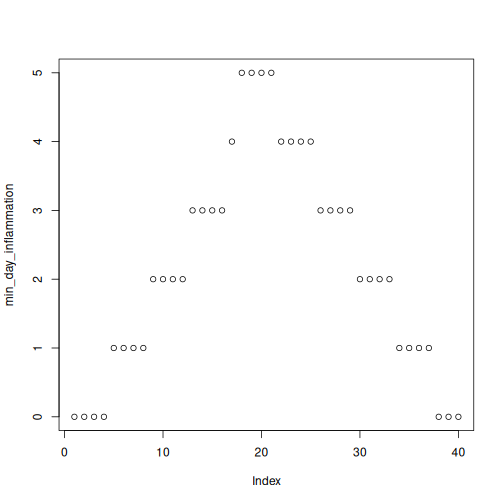
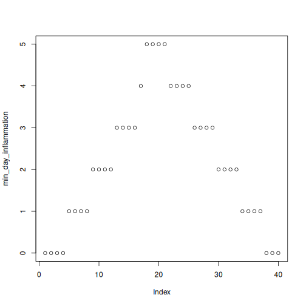